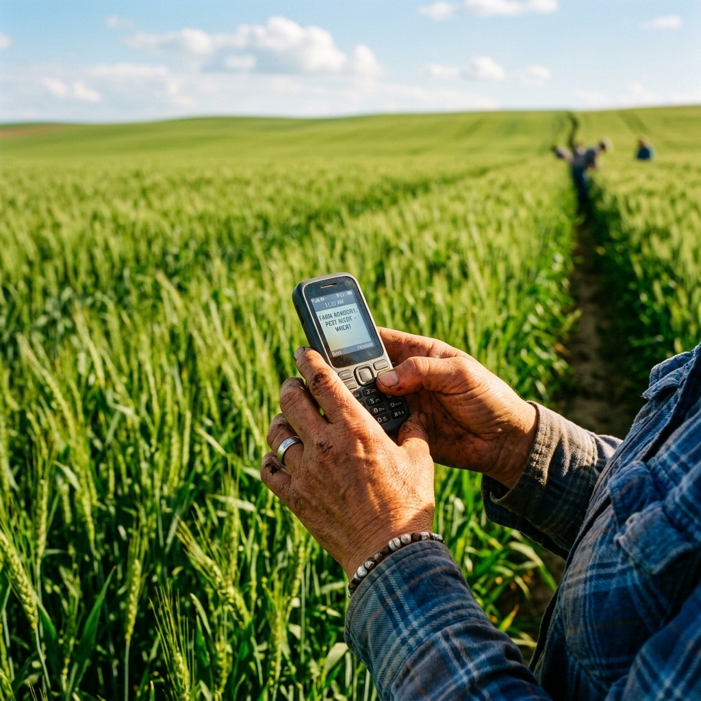
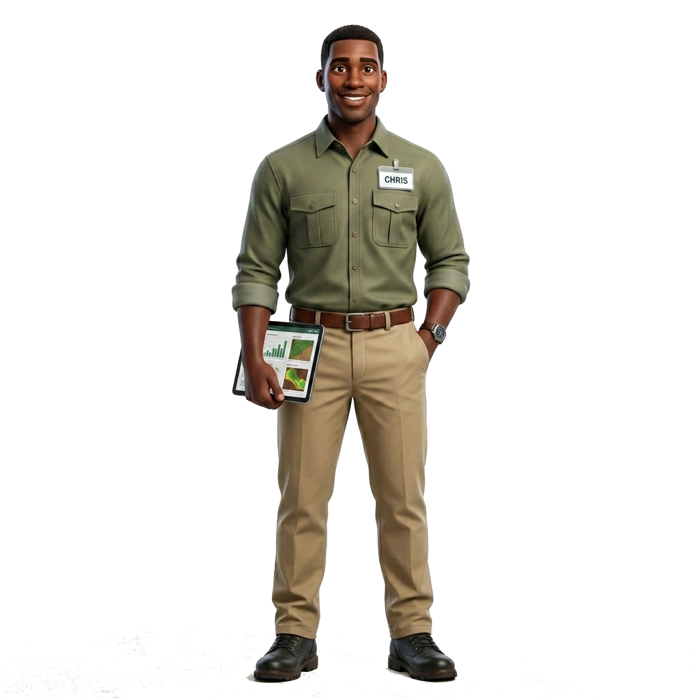
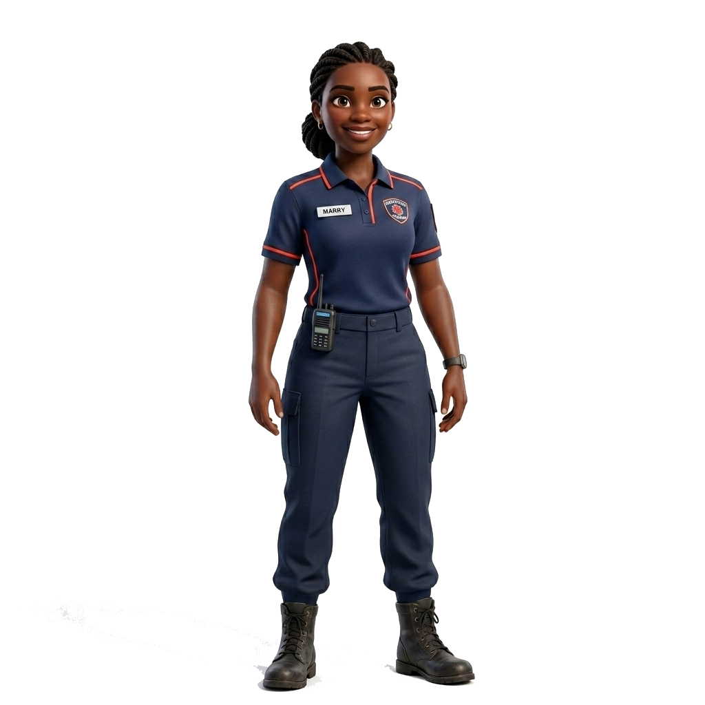
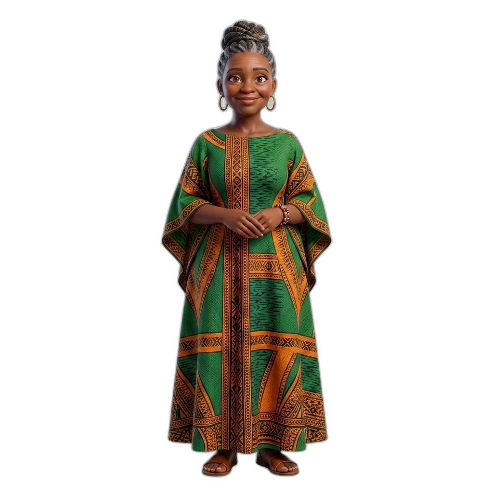
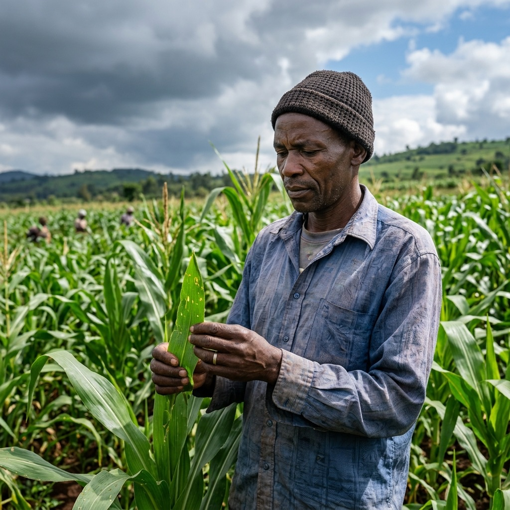

[Title, about 5 seconds] We're iNua Technologies. We give organisations working with rural communities AI experts that talk with people on any phone, in their own language.
⚑ This title script is new (the draft has no title slide). Adjust as you like.
A twelve-year-old girl in a rural village finally finds the courage to call the free child helpline. It rings, and rings, and no one answers.
Emmanuel knows her well. He works at a national child helpline in Southern Africa. Today only about 60% of their calls are answered, and as Emmanuel told us, how quickly they answer and how many calls they miss is one of their key KPIs. And you never know which missed call was the emergency. The helpline is mostly donor funded, but donors fund projects with end dates, and a helpline never closes. Every counsellor they add makes the system bill bigger. They can only answer as many calls as they have people free to take them.
⚑ In the Oct 27 call, Emmanuel said his team's deep dive traced most missed calls to one mobile network provider's outages, not to counsellor availability. Confirm the cause with him before saying "as many calls as they have people free".
⚑ "Emmanuel knows her well" makes the child sound real. The screen says "Illustrative story"; consider saying it aloud too.

A farmer in East Africa is curious about a solar pump, but she isn't sure it's worth it, and no one has time to call her and help her decide.
Peter works at a solar irrigation company that sells solar irrigation to smallholder farmers on pay-as-you-go. They serve 50,000 to 60,000 customers with a call centre of about 60 agents, but around 250,000 leads are already sitting in their system, and no one is calling them. Their plan to grow is to offer those farmers something valuable first, like weather alerts and planting advice, so they build trust and become customers. But that means talking to every farmer one by one, and they can only have as many conversations as they have agents free to take them.
⚑ The screen says "call-centre agents" so it isn't confused with iNua's AI agents. Consider saying it the same way.
⚑ Script updated to match the screen: "250,000 leads already in their system" (was "250,000 farmers they could reach"). Confirm that figure with Peter.
Organisations can't hold meaningful, one-to-one conversations with rural people at scale.
Every conversation still depends on someone being free to take it.
A child helpline trying to protect children, and a company trying to grow. One counts missed calls, the other counts farmers it never reaches. And both are limited in their ability to provide their service to the people who need it. Underneath, it's the same problem: organizations in East Africa can't hold meaningful, one-to-one conversations with rural people at scale, because today every conversation depends on someone being available to take it.
Today, organizations have to choose. Call centres and field teams give real, quality conversations, but they only stretch as far as the people available. Bulk SMS and IVR reach millions, but they speak at people, not with them, and no one can ask a question back. The obvious fix would be apps and chatbots, but according to the ITU, only 23% of rural Africans use the internet, and according to the GSMA, 6 in 10 mobile connections in East Africa still aren't smartphones. So the corner that matters most, scale and quality together, is still empty.
⚑ The draft names the 23% source two ways ("Digital Development Dashboard" on the slide, "Africa regional report" in the references). This slide uses the report, which the reference link points to.
⚑ New figure (replaces the 25% coverage stat): GSMA, The Mobile Economy Sub-Saharan Africa 2024, p. 8: EAC smartphone adoption 40% of connections in 2023 (Sub-Saharan Africa overall: 51%). Add it to the references list: https://event-assets.gsma.com/pdf/GSMA_ME_SSA_2024_Web.pdf
How quickly you respond to calls. How many of these calls do you miss?
The word we've been using is customer intimacy.
And he says, ‘Nobody ever called me.’
They can go for miles, walking and telling people what's coming.
Emmanuel and Peter are not alone. Tendai runs a solar pay-as-you-go company in Zimbabwe. Samuel leads programmes for an NGO in Mozambique. Helplines, agricultural companies, pay-as-you-go providers, NGOs: each one meets the same wall at its call centre.
These organizations are our customers. But the people who feel the problem most are the ones they're trying to reach: the child, the farmer, the rural customer on a basic phone, speaking their own language. And around them sit the funders, telecoms and field teams that keep these services running.
⚑ The tile quotes are shortened from the draft. The local helpline transcript is from Oct 27, not Nov 13; check the date for Emmanuel's quote.
⚑ Pains are drafted from local call notes and customer documents because the Customer Pains Summary Google Doc wasn't accessible. Swap in that tab's wording once shared.
⚑ Customer names are pseudonyms and portraits are AI-generated stand-ins. Keep them: real photos or names would identify the people and their organisations.

Chris[Step 1: Emmanuel panel] Now imagine Emmanuel's helpline with iNua. The girl calls, and the first thing that happens is that she's answered, immediately, day or night, in her own language. That alone moves Emmanuel's most important KPI. If she has a general question, the agent answers it, using the helpline's own approved guidance. If it's more than that, the agent stays with her, keeps her talking, and flags the case. A counsellor picks up, already knowing her story, and she gets the help she needs, in time.
[Press → for step 2: Peter panel] Now imagine Peter. His company already has data on 250,000 farmers who aren't customers yet. With iNua, it doesn't wait for them to call. The agent calls each farmer, on any phone, in her language, already knowing who she is. It asks what she's growing this season and what's worrying her, and records every answer in her profile. It gives her useful advice right away, like a warning before the rain. And when she's ready for a pump, the call goes straight to Peter's sales team, who now know exactly what she needs. Every call adds value for the farmer and gives the company a better chance to make the sale.
⚑ Emmanuel's agent is Nia here, to match the experts slide. The weather line in Chris's bubble is illustrative.
Behind every story is the same agent. It works on the channels people already use: voice calls and SMS on any basic phone, without internet, and WhatsApp where they have data. It holds real, human-like conversations in local languages, and it's trained on each organization's own knowledge.
And in one conversation, people reach every expert they need. A farmer calls about a broken pump, Nia helps fix it, Josef collects the payment by mobile money, and Chris answers a question about watering, all in the same call, with no transfers. When something really needs a person, like a bigger sale or an urgent case, it goes to the team with a summary. So people spend their time on the conversations that actually need them.
⚑ New script lines for the "one conversation, every expert" part. The conversation on screen is illustrative.
⚑ CRM: iNua's source-of-truth doc lists integrations as an open item, so the script no longer mentions it.

Every organisation gets the experts it needs, and experts can work for more than one. For Emmanuel, Nia answers every call and hands urgent ones to a counsellor. For Tendai, Josef follows up with payment reminders and mobile money collection. For Peter, Chris gives farmers advice that builds trust before the sale. And Tariq, our sales expert, works for both of them: he turns Tendai's late-night leads and Peter's warmed-up farmers into sales. For Samuel, Mary takes emergency reports and warns communities, no smartphone needed.
⚑ Script reordered to match the new layout, and Tariq now also serves Peter.
And every conversation, from every expert and every channel, lands in one place. Each organisation sees what people are asking, which cases need a person, and what's changing on the ground, as it happens. Their team doesn't need to listen to every call; they focus on the conversations that actually need them.
⚑ New slide and new script. The numbers, names and places on the dashboard are illustrative, and the slide says so.
Our model is usage-based. After a one-time setup, organizations pay for the conversations they actually have: the call minutes and messages. That makes it a win-win. The more they use iNua, the more people they reach, the more they grow, and as they scale, we grow with them. We only do well when our customers do.
⚑ iNua's source-of-truth doc describes the model as an onboarding fee plus a monthly subscription that scales with volume, channels and seats. The draft says "usage-based". Agree on one description before recording.
Remember the empty corner? Until now, organizations had to choose. They could give people real, quality conversations, but only as many as they had people to hold them. Or they could reach everyone at once, but only by talking at them. iNua brings both together: conversations that are personal, two-way and in the person's own language, at the scale of a whole country. Emmanuel answers every call. Peter reaches every farmer. That's our innovation: quality at scale, in local languages.
We're not the only ones bringing AI to phones in Africa. Viamo runs a voice assistant on basic phones across many countries, but it's one assistant, sold on custom contracts, at a much higher cost. Pindo builds voice AI for banks and utilities, and its deployments are in Rwanda. Others focus on debt collection, smartphone channels or scripted flows. iNua gives every organisation its own team of experts, on voice, SMS and WhatsApp, in one place, at a much lower cost.
⚑ New slide and new script. Viamo DOES offer two-way AI voice on basic phones (its assistant AVA, launched 2023–2025) and transfers callers to humans, so don't claim otherwise on camera.
⚑ "Much lower cost than Viamo": Viamo publishes no pricing for organisations, so there's no public source. Be ready to back it with a real quote or customer comparison, or soften it.
⚑ Pindo: deployments are publicly verified only in Rwanda, but its site says "East Africa" and lists Luganda and Swahili. Say "deployments in Rwanda", not "only in Rwanda".
⚑ Watch: SautiLabs (AI phone agents on any phone, trained on your documents, voice only) is the closest match to iNua's voice product. Not shown on the slide.


Today, we already work with a funder that backs local organisations. Through them, we support 15 organisations in Nigeria, Uganda, Rwanda and Kenya. Each one has Amara, our fundraising expert, who talks with their donors on WhatsApp, collects donations by mobile money, and gives every organisation its own dashboard.
⚑ The funder is described, not named, to keep client names out of the deck.
⚑ This makes 16 slides; the Pears limit is 15.
So why us? We stand between two worlds. On one side, we come from Tel Aviv's tech world, building advanced technology. Michal is a software developer. On the other side, we've spent years in close touch with local communities, curious about daily life there and committed to the people we work with. Gilad comes from Africa's agriculture world, Michal has lived and volunteered with local communities, and we bring the business perspective to make it last. We bring proven technology to where it's needed most.
⚑ Adi isn't named in the script ("we bring the business perspective"). Consider "Adi brings the business perspective". Gilad's photo is missing: add images/people/gilad.jpg.

Behind every organisation are thousands of people like these. Farmers, families, children, communities. With iNua, every one of them can reach the right expert, in their own language, any time. Thank you.